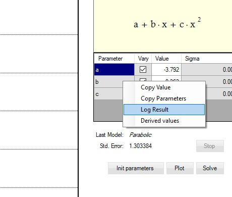

Keep track of Analysis Results for different data
Regression results for specific model can be recorded for different data. To log regression result right click on the model parameters table and choose Log Results or press Ctrl+R keys:

In the Log Result dialog enter name for instance ‘SampleData_1’ for the log and click the Ok button:

Table with logged regression result for specific model is shown:

The Fit Log Report is not saved as part of the project.